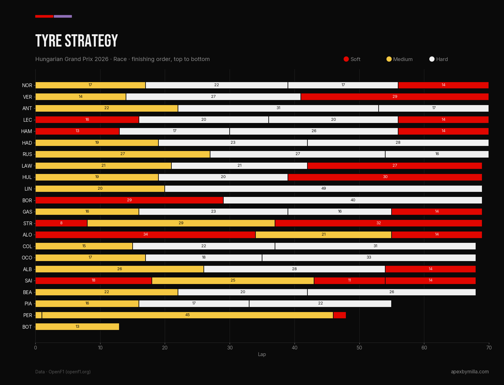
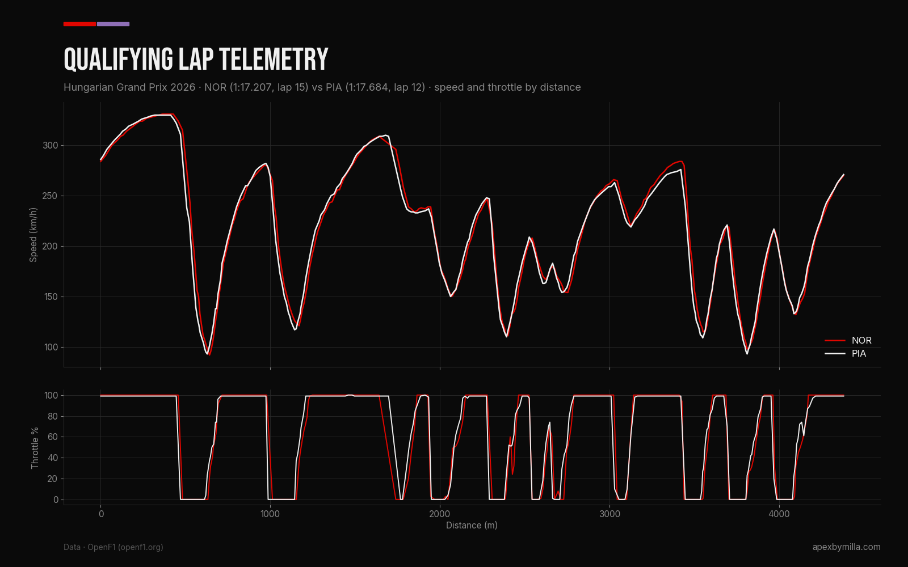
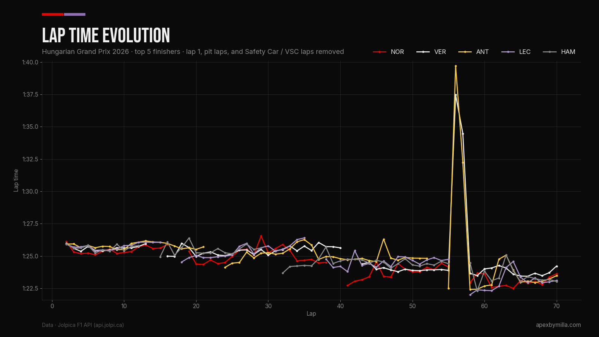
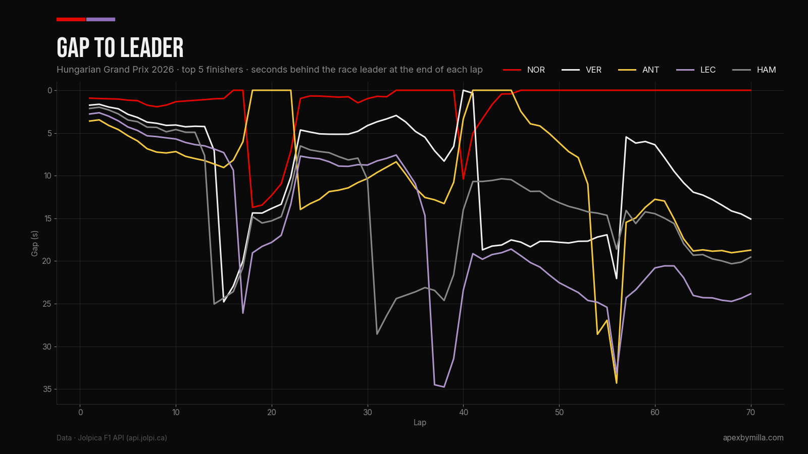

Lando Norris won the 2026 Hungarian Grand Prix from pole by 15.080s, McLaren's first win of the season, on the weekend their first redirected upgrade package arrived. Oscar Piastri led the first half of the race but was hit by a lapped Carlos Sainz after the steering wheel blue lights failed, then retired with a gearbox failure, and the Virtual Safety Car that followed let Red Bull keep Max Verstappen out for second. Kimi Antonelli finished third and extended his championship lead to 50 points, while George Russell recovered from nineteenth to seventh after an anti-stall start.
Race Overview
The Hungaroring is one of the slowest and twistiest circuits on the calendar, and it gave McLaren their first win of 2026. Lando Norris won the Hungarian Grand Prix from pole by 15.080s, ahead of Max Verstappen and Kimi Antonelli, and it was the first race of the season not won by Mercedes or Ferrari, after Mercedes won eight of the first ten rounds and Ferrari won the other two.
Norris did not lead for long at the start. Oscar Piastri, who started third, passed Charles Leclerc off the line and then went past Norris into Turn 2, with a cut-back on the exit, so McLaren were still in front, but with Piastri leading. Verstappen also passed Leclerc, and Lewis Hamilton, who started fifth after his grid penaltyGrid PenaltyPlaces a driver drops on the starting grid, for a rules breach or for using more power unit elements than allowed.→ Apex Index, passed his teammate as well, so Leclerc finished the first lap fifth after starting second. George Russell's start was much worse. His Mercedes went into anti-stallAnti-stallA safety system that opens the clutch when the engine speed drops too low, so the engine does not stall. It saves the car but costs several seconds.→ Apex Index as the lights went out, and he dropped from sixth on the grid to nineteenth by the end of the first lap.
For the first half of the race, Piastri led Norris by around a second. Hamilton was the first of the front-runners to pit, on Lap 13, and Verstappen pitted a lap later, briefly fell behind him, and then passed him into Turn 1 on Lap 16. Piastri and Leclerc pitted on Lap 16 and Norris on Lap 17, all switching to the Hard, while Antonelli stayed out on his Mediums until Lap 22 and led the race during the stops. Piastri was back in front once the stops had cycled through, but when he made his second stop on Lap 33, Norris got clear air for the first time, and his pace on the Hards was enough to come out ahead of Piastri after his own second stop on Lap 39.
Piastri's race then fell apart. Shortly after his second stop, Carlos Sainz, who was fighting Fernando Alonso for fourteenth while being lapped, cut back across the track between Turn 2 and Turn 3 and hit the front of the McLaren. The steering wheel blue lightsBlue Flag LightsLights on the steering wheel and on track-side panels that warn a driver they are about to be lapped, worked out from GPS data.→ Apex Index, which warn drivers when they are about to be lapped, had been switched off early in the race because of a GPS problem, and Sainz said he had no idea Piastri was there. Sainz was given a five-second penaltyTime PenaltySeconds added to a driver's race time by the stewards, served at a pit stop or added at the end.→ Apex Index, but Piastri lost the time he needed to stay in the fight with Norris, and on Lap 56 he stopped near Turn 3 with a gearbox failure.
By then Norris was already leading. Antonelli had tried to make a one-stop strategy work and led from Lap 41, but Norris caught him on newer Hards and passed him for the lead on Lap 46, and Mercedes eventually gave up on the one-stop and pitted Antonelli on Lap 53. Piastri's stoppage brought out a Virtual Safety CarVirtual Safety Car (VSC)A neutralisation where every driver holds a set delta time instead of following a physical Safety Car.→ Apex Index on Lap 56, and Norris, Hamilton, and Leclerc all pitted under it for Softs. Red Bull kept Verstappen out on the Softs he had fitted on Lap 41, which moved him up to second, and he held that place to the flag. Hamilton came out of the pits ahead of Antonelli but had to give the place back because replays showed Antonelli had reached the white line at the end of the pit straight first, and Antonelli then held off both Ferraris for the rest of the race, on Hards against their Softs. Hamilton was also given a five-second penalty for speeding in the pit lane, which dropped him behind Leclerc to fifth, while Isack Hadjar was sixth and Russell recovered to seventh.
Practice
FP1
Ferrari set the early pace in Hungary. Leclerc topped the first session with a 1:19.075, 0.484s ahead of Verstappen and 0.543s ahead of Hamilton, with Hadjar fourth and Russell fifth. The track was dusty at the start of the session and cleared up quickly as more cars ran, and Red Bull's Pierre Waché said afterwards that "The grip is very low, it's dusty and very bumpy." Five teams ran a different driver in at least one car, including Fred Vesti in Antonelli's Mercedes, who finished seventh, and Leonardo Fornaroli in Piastri's McLaren, who tested the rotating rear wing that McLaren first ran in Austria.
The session was stopped with just over 20 minutes left, after the left-rear suspension on Lance Stroll's Aston Martin failed on the exit of Turn 3 and spun him, which meant he also missed FP2. Leclerc's session ended early too. Something broke on his Ferrari at Turn 13 after he had set the fastest time, and he coasted to a stop at the pit lane entry. Verstappen was not happy with his car either, complaining that "the downshifts are horrendous," while Norris, running McLaren's new upgrade package, was only eleventh, 1.949s off the pace.
FP2
Hamilton was fastest in FP2 with a 1:18.729, 0.148s ahead of Leclerc, so Ferrari finished Friday first and second. Norris improved to third, 0.499s back, with Verstappen fourth and Russell fifth. The wind picked up during the session, which made the balance of the cars harder to manage, and the track temperature stayed between 28°C and 34°C, much cooler than it would be for the rest of the weekend.
Franco Colapinto brought out a red flag when he lost the rear of his Alpine at Turn 14, the final corner, and spun backwards into the barrier, which left him with only 11 laps. The stoppage also forced Antonelli to abort a flying lap, and he finished thirteenth, 1.964s back. Mercedes struggled in general, with Russell describing his car as "dreadful," although he also said that "our long run looked more competitive." Pierre Gasly had a difficult session as well, saying that "It just feels broken in Turn 12." Piastri, in his first session of the weekend, was eighth, and McLaren said he ran the old floor specificationFloorThe underside of the car, which produces most of its downforce through the shaped tunnels underneath.→ Apex Index while Norris ran the new parts.
Pirelli said after Friday that the Soft was around 0.8s quicker than the Medium, and that six teams had kept both of their sets of Hards for the race, which suggested the teams did not yet agree on the best strategy.
FP3
Norris was fastest in FP3 with a 1:17.939, 0.117s ahead of Hamilton and 0.129s ahead of Antonelli, with Leclerc fourth and Piastri fifth. It was the first sign that McLaren's upgrade was working, and the track temperature had risen to between 49°C and 55°C, much closer to the conditions expected for the race.
The third red flag of the weekend came when Sergio Pérez's Cadillac lost power as he left the pit lane and stopped approaching Turn 2. Pérez said, "It looks like the brakes are on fire at the back," and he completed only one lap. Arvid Lindblad only managed six laps, because his Racing Bulls spent most of the session on jacks with a power unit issue, after the team had already broken the overnight curfew to fix a similar problem on Liam Lawson's car. Antonelli also asked the team to check his floor after hitting the kerb at Turn 4.
Starting Grid & Qualifying
Norris took pole with a 1:17.207 on his final Q3 lap, only 0.012s ahead of Hamilton, with Leclerc third, 0.238s back, and Antonelli fourth. Piastri was fifth, 0.477s off his teammate, ahead of Verstappen, Russell, Hadjar, Lindblad, and Nico Hulkenberg. Norris credited the upgrade straight away, saying, "the team has done a brilliant job with the new upgrades," while Hamilton said, "I didn't quite have the grip I needed on my final Q3 run."
Verstappen had a difficult session and said, "The car was oversteering a lot and each lap it wasn't improving." He then spun at the final corner at the end of Q3, which brought out yellow flags while other drivers were still on their final laps. Antonelli lifted for the yellow, but the stewards decided he had not slowed enough. The telemetry showed he lifted 16 metres earlier than on his previous push lap and was 14 km/h slower entering the yellow flag sector, but because he braked less, he was 3 km/h faster passing the incident, and his mini sector was only 0.03s slower than his best. Antonelli said, "I lifted on the final corner because of the yellow flag for Max (Verstappen) and I lost just under two tenths of a second." The guideline penalty was five grid places, but the stewards reduced it to three because he did slow down and had limited time to react.
Hamilton was also given a three-place grid penalty, for impeding Piastri at Turn 1 at the end of Q3, and Piastri said that "we had more in us" before being held up. Russell's session ended with a water leak on his final lap, and he said, "we stopped as a precaution once we'd finished our effort," which meant Mercedes had to change a component before the race. Further down the order, Lawson missed Q3 in eleventh after locking up on his first lap, and Alonso reached Q2 for Aston Martin on the first weekend of their new upgrade package.
Because of the two penalties, the starting grid was very different from the qualifying order. Leclerc moved up to second, Piastri to third, and Verstappen to fourth, with Hamilton fifth, Russell sixth, and Antonelli seventh. Pérez started from the pit lanePit Lane StartStarting the race from the pit lane instead of a grid slot, usually after changes made under parc fermé.→ Apex Index, because Cadillac changed the setup of his car while it was under parc ferméParc FerméThe rule that stops teams changing setup or major parts between the start of qualifying and the race without FIA permission.→ Apex Index conditions.
Technical Breakdown
The Hungaroring measures 4.381 km and has 14 corners, with one main straight, the pit straight into Turn 1. In the telemetry from Norris's pole lap, the throttle was fully open for around 46% of the lap, compared with around 65% on the fastest race laps at Spa a week earlier. Because of this, energy deploymentERS (Energy Recovery System)The battery, control electronics, and MGU-K that recover energy under braking and deploy it as extra power.→ Apex Index was expected to matter less than it did in Belgium, and the weekend was decided more by balance, traction out of the slow corners, and how well each car looked after its rear tyres in the heat. Turn 1 and Turn 12 were also resurfaced before the weekend.
Compound Choice
Pirelli brought the C3, C4, and C5 as the Hard, Medium, and Soft, the three softest compounds in the range and the same selection as in 2025. Each driver had two sets of Hards, three sets of Mediums, and eight sets of Softs, and with a dry race, every driver had to use at least two different compounds. Pirelli said before the weekend that "C3, C4 and C5 are the ideal selection for a slow track where traction and braking stability are crucial," and that track temperatures at the Hungaroring "are typically the highest recorded throughout the season," so thermal degradationThermal DegradationLoss of tyre grip caused by the rubber overheating beyond its working window.→ Apex Index, especially on the rear axleRear AxleThe line through the two rear wheels, where the power unit puts its drive down to the road.→ Apex Index, was the main concern.
That concern grew during the weekend. After qualifying, Pirelli's Dario Marrafuschi said, "Degradation, which has been higher than expected, has effectively brought the two strategic options into line," meaning a one-stop and a two-stop were expected to take a similar total time. The race was run in an air temperature of between 30°C and 32°C and a track temperature of between 44°C and 53°C, which matched Pirelli's warning about the heat.
Tyre Strategy
Charles Leclerc, Lewis Hamilton, Gabriel Bortoleto, Fernando Alonso, Carlos Sainz, and Lance Stroll started on the Soft C5, while everyone else started on the Medium C4. Leclerc's Softs were a used set, three laps old, and F1.com's report said Ferrari's Soft start was meant to help them gain places on the opening lap, which did not work, since Leclerc lost three places. Twelve drivers made two stops, five made three, and only Bortoleto and Lindblad made one, with Lindblad running 49 laps on a single set of Hards, the longest Hard stint of the race.
The front-runners split into two approaches. Ferrari ran Soft, Hard, Hard, and Soft with both cars, and Marrafuschi said, "Ferrari demonstrated particular effectiveness in extracting performance from the red-marked tyre." Mercedes built their race around the Hard instead, and Antonelli ran the Medium, then a long stintTyre StintThe period a driver runs one set of tyres before pitting. A long stint stretches close to the limit of the tyre's life.→ Apex Index on the Hard, aiming for one stop. But, his rear tyres did not last, and he said they were "too much on the limit," so Mercedes pitted him again on Lap 53 for a new set of Hards. Hadjar said his first stint on the Medium "probably cost us getting anything more out of today," and his pace improved once he switched to the Hard.
The Virtual Safety Car on Lap 56 decided the final order. Norris, Hamilton, Leclerc, Alexander Albon, Sainz, and Gasly all pitted under it, which cost them less time in the pit lane relative to the cars on track, and the three front-runners all fitted Softs that were three laps old. Russell had pitted just over a lap before it was called, on Lap 54, and Antonelli on Lap 53, so both paid for full green-flag stops. Red Bull did the opposite and kept Verstappen out on the Softs he fitted on Lap 41, which were already three laps old when they went on, so he ran the last 29 laps of the race on the same set.

Aerodynamics & Setup
The Hungaroring needs as much downforce as possible, so the teams focused on balance and rear grip rather than straight-line speed. McLaren brought their first redirected upgrade package, and Andrea Stella said after qualifying that "The new upgrades we brought to the track performed exactly as we had anticipated." After the race he went further, saying, "The performance step we saw this weekend can be entirely ascribed to the upgrades," and Norris said, "The car was beautiful to drive and I felt very confident."
The telemetry from the two McLarens' best qualifying laps shows where that confidence was worth the most. Norris and Piastri reached almost the same top speed, 331 km/h and 330 km/h, and the gap between them was small for most of the lap. Most of the 0.477s difference came between around 3,250 m and 3,750 m into the lap, in the slower corners near the end, where Norris carried around 5 to 6 km/h more minimum speed. The data is only sampled around four times a second, so these numbers are approximate, but they suggest Norris had more confidence in the rear of the car in the low-speed corners than Piastri, who had less running on the new parts after missing FP1.
Red Bull struggled with balance all weekend. Laurent Mekies said, "I think we never managed to give Max and Isack a car they could push with," and both drivers complained over the radio about gear shifts, balance, and deployment. Aston Martin's new package worked better, and Adrian Newey said, "It's clear we've taken a very encouraging first step forward with the upgrade," while Stroll called it "the most encouraging upgrade we've had in a long time." Racing Bulls brought Lindblad's upgrade to Lawson's car, as planned after Spa, and Lawson said "the car just felt super strong throughout" on his way to eighth.

Pace & Performance
The fastest lap of the race went to Leclerc, with a 1:22.000 on Lap 58, the second lap of his final stint on Softs. Hamilton was second fastest with a 1:22.300 on Lap 59, and Antonelli third with a 1:22.415 on Lap 58, which is notable because he set it on the Hard while the two Ferraris were on Softs. Norris's best was a 1:22.491 on Lap 64, and Verstappen's was only a 1:23.433, the slowest of the top five, which fits with his comment after the race that "We were still struggling with the same things we had in Qualifying."
| Pos. | Driver | Fastest lap | On lap | Pit stops (lap) | Stop times | Gap at flag |
|---|---|---|---|---|---|---|
| P1 | Norris (McLaren) | 1:22.491 | 64 | 17, 39, 56 | 22.147s, 22.112s, 21.878s | WINNER |
| P2 | Verstappen (Red Bull) | 1:23.433 | 66 | 14, 41 | 21.625s, 22.015s | +15.080s |
| P3 | Antonelli (Mercedes) | 1:22.415 | 58 | 22, 53 | 21.326s, 21.300s† | +18.728s |
| P4 | Leclerc (Ferrari) | 1:22.000 | 58 | 16, 36, 56 | 21.931s, 21.763s, 21.945s | +23.840s |
| P5 | Hamilton (Ferrari) | 1:22.300 | 59 | 13, 30, 56 | 21.748s, 21.693s, 22.420s | +24.540s* |
| P6 | Hadjar (Red Bull) | 1:23.218 | 45 | 19, 42 | 21.822s, 22.211s | +55.488s |
| P7 | Russell (Mercedes) | 1:22.589 | 58 | 27, 54 | 22.247s, 22.019s | +57.503s |
* Includes Hamilton's five-second penalty for speeding in the pit lane. † Antonelli's second stop is missing from the F1.com pit stop summary, so this time is from OpenF1. Stop times are total pit lane time.
For the first two stints, the two McLarens had very similar pace. From Lap 2 to Lap 12, Norris's typical green-flag lap was a 1:25.307 and Piastri's a 1:25.339, and from Lap 19 to Lap 32, Piastri was actually slightly quicker, at 1:25.040 against 1:25.156 for Norris. The difference came in the third stint. Between Lap 42 and Lap 52, Norris's typical lap was a 1:23.780, 0.593s quicker than Piastri, who had just been hit by Sainz, and around a second a lap quicker than Antonelli, whose Hards were 17 laps older. This is why Norris was able to catch Antonelli so quickly and pass him for the lead on Lap 46, and he said afterwards that "My pace today was probably some of the best pace I've ever had."
The last 13 laps show why nobody could challenge Norris after the VSC. From Lap 58 to the flag, Norris and Leclerc both ran a typical lap of 1:22.93, but Leclerc was stuck behind Antonelli, whose new Hards were only around 0.1s a lap slower at 1:23.050. Antonelli said, "It was very difficult to overtake, even when we had significantly more pace than the cars ahead," and the same applied to the cars behind him. Verstappen was the slowest of the top five over this period, at 1:23.667, on Softs that were more than 15 laps old, and his gap to Norris grew from 5.4s on Lap 57 to 15.080s at the flag. But, with Hamilton 8.6s behind him on Lap 57 and the Ferraris then stuck behind Antonelli, he had more than enough margin to keep second.


Engineering Question of the Race
"Why did Russell's Mercedes go into anti-stall at the start?"
Russell started sixth and was nineteenth by the end of the first lap, and Mercedes have explained what happened in some detail. Bradley Lord said the drivers "hold what are called their wait revsWait RevsThe engine speed a driver holds on the grid while waiting for the start lights to go out, ready for the launch.→ Apex Index, so the engine's RPM, at a specific level" while they wait for the lights, but on Russell's car the engine speed kept rising beyond what his throttle was asking for, until "The revs hit the rev limiter at the maximum RPM that the engine allows at that point." Russell tried to bring the revs back down, and "as he was lifting right off the throttle to under 10% of throttle demand, the lights went out." Lord's conclusion was that "He made a start with effectively much too little throttle through no fault of his own." On the radio, Russell asked, "What happened there?" and his engineer replied, "Anti-stall."
Anti-stall is a safety system that protects the engine at low speed. If the engine speed drops too low while the clutch is engaged, the system opens the clutch so the engine does not stall, and the driver then has to get the car moving again. That protects the car from stalling on the grid, which would be much more dangerous, but it costs several seconds, and at the start of a race that means losing places to most of the field. In Russell's case, the very low throttle at the moment the lights went out meant the engine could not hold its revs once the clutch was released, which is what triggered it.
What is confirmed is the sequence of the revs rising to the limiter, Russell lifting to under 10% throttle, and the anti-stall triggering, and that Mercedes say the driver was not at fault. Toto Wolff described it the same way, saying Russell "gave about 10% throttle and the whole thing revved maximum," and added, "His problem at the start was fully on us as a team and it isn't good enough." What Mercedes have not explained is why the revs kept rising in the first place.
My theory is that the problem was in how the engine speed is controlled while the car waits on the grid, rather than in Russell's driving. The wait revs are held by the engine's control system, so if that control did not respond to his throttle input, lifting off was the only thing he could do to stop the revs climbing, and that left him with almost no throttle exactly when he needed the most. Russell also had a water leak in qualifying that needed a component change, but Mercedes have not linked the two problems, so I would not connect them without more information.
The cost was significant. Russell finished seventh, 2.015s behind Hadjar, and Lord called it an "incredible recovery drive," but he also lost the chance to fight for the podium, and he is now 59 points behind Antonelli in the championship.
💡 "We didn't have blue lights on the steering" – Carlos Sainz. The steering wheel blue lights rely on GPS data, and after a communication fault sent false warnings early in the race, the system was switched off, and the blue light panels around the track stopped showing car numbers, so Sainz had only the waved blue flags to tell him Piastri was about to lap him when the two collided.
Race Result — Top 10
* Includes a five-second penalty for speeding in the pit lane, which dropped Hamilton from fourth to fifth.
DNF / DNS
My pick is Russell, which is different from the official fan vote, where Verstappen won with 18.9% and Russell was fourth on 11.0%. Russell started sixth, dropped to nineteenth on the opening lap after the anti-stall, which was not his fault, and still finished seventh, only 2.015s behind Hadjar. He was in traffic for most of the race, passing cars one by one in the first stint, and he was also unlucky with the timing of the VSC, which came just over a lap after his second stop. Verstappen's second place was impressive in a car he described as oversteering all weekend, but he started fourth, and second place came mainly from Red Bull's decision not to pit him under the VSC, while Russell gained twelve places from where he was after the first lap.
Key Takeaways
Antonelli's third place extends his championship lead to 50 points over Hamilton, with Russell 59 points behind, going into the summer break. Antonelli called it "big damage limitation," and Wolff was open about the weekend, saying, "the prevailing feeling is that we should have done better," after Antonelli missed FP1, the team did not get the setup right, and Russell's race was lost at the start. Mercedes still lead Ferrari by 72 points in the Teams' Championship.
McLaren's win is the clearest result of an upgrade so far this season. Their first redirected package arrived in Hungary, and within one weekend Norris went from eleventh in FP1 to pole and a 15-second win. The question now is whether that step was specific to a slow, high-downforce circuit like the Hungaroring, or whether it carries over to faster tracks. Gearbox reliability is also a concern, since Piastri's retirement came from an apparent gearbox failure.
Ferrari were fastest on Friday and left Hungary with fourth and fifth. Fred Vasseur said, "Everything went wrong, but for sure we have to do a much better job in some way," pointing to the start, Hamilton's pit lane penalty, and losing time in the stops, saying that "at each time that we are doing a pit stop, we are losing our position for 0.2 or 0.3 seconds." Red Bull's result was the opposite, with a car that Mekies admitted was difficult all weekend turned into second place by the VSC call.
In the midfield, Racing Bulls scored with both cars, with Lawson eighth and Lindblad tenth for his sixth points finish in a row, and Hulkenberg scored his first points of the season in ninth. Aston Martin's upgrade did not score points, but Stroll and Alonso finished thirteenth and fourteenth, and Alonso said the car performed well in the race.
The VSC on Lap 56 put Red Bull in a difficult position with Verstappen. He was on Softs that had already done 14 laps, plus the three they had done before they were fitted, and the cars around him were about to stop for fresher tyres at a reduced cost. Pitting would have given him new rubber for the last 14 laps, but it would most likely have put him back behind Antonelli and both Ferraris, at a circuit where Antonelli said it was very difficult to overtake even with a big pace advantage. By staying out, Red Bull traded tyre life for track position, and the numbers show why it worked. Verstappen lost around 0.7s a lap to Norris in the final stint, but the gap behind him to Hamilton was already 8.6s on Lap 57, and the Ferraris then spent the rest of the race stuck behind Antonelli. Mekies admitted that "there have been a number of quite spicy strategy calls made by the guys today."
Mercedes' decision with Antonelli is the other side of the same VSC. He had run a long middle stint on the Hard, trying to make one stop work, and when the rear tyres went past their limit, Mercedes pitted him on Lap 53, three laps before Piastri stopped. A later stop would have meant losing more time on worn tyres with no guarantee of a neutralisation, so the call itself was reasonable, but it meant he paid for a full green-flag stop while the Ferraris stopped under the VSC. Wolff said, "We were unlucky with the VSC again, that could have been a P2." Antonelli still kept third, which shows how much track position was worth around the Hungaroring, since a car on new Hards was able to hold off two cars on Softs for the last 13 laps.
Looking Ahead
Hungary was the last race before the summer break, and Formula 1 returns at Zandvoort for the Dutch Grand Prix, Round 12, from 21 to 23 August. It is a Sprint weekend, so the teams will have only one practice session to set up their cars before Sprint Qualifying, which makes it harder for anyone bringing new parts to understand them before they count.
The main question is whether McLaren's step carries over. Zandvoort is faster than the Hungaroring, but it still has a lot of medium and high-speed corners where downforce matters, so it should show whether the upgrade is a general improvement or something that suited a slow circuit. Aston Martin are also expecting Honda's power unit update at Zandvoort, after Alonso said Hungary was a good baseline for it, and Zandvoort is Verstappen's home race, at a time when Red Bull are still trying to understand their car's balance.
In the championship, Antonelli goes into the break 50 points ahead of Hamilton, with eleven races left. He said "the second half is going to be hard," and with McLaren now able to win, Ferrari fastest on Friday in Hungary, and Russell 59 points back after another difficult weekend, the gap is large but not yet decisive.
Sources
Primary research used for this race report.
- Formula1.com — Norris beats Verstappen and Antonelli to victory in dramatic Hungarian GP
- Formula1.com — Hungary lowdown, all the key moments
- Formula1.com — What the teams said, race day in Hungary
- Formula1.com — What the teams said, qualifying in Hungary
- Formula1.com — What the teams said, Friday in Hungary
- Formula1.com — Official grid for the Hungarian Grand Prix
- Formula1.com — FP1 report
- Formula1.com — FP2 report
- Formula1.com — FP3 report
- Formula1.com — Driver of the Day
- Formula1.com — Mercedes explain what led to Russell's start in Hungary
- Formula1.com — Wolff on Mercedes' Hungarian weekend
- Formula1.com — Mekies on Red Bull's strategy calls
- Formula1.com — Vasseur on Ferrari's Hungarian Grand Prix
- Formula1.com — Sainz on the blue light issue
- Formula1.com — Piastri on the Sainz collision
- Formula1.com — Antonelli on extending his lead
- Formula1.com — Stewards' decision on Antonelli's grid penalty